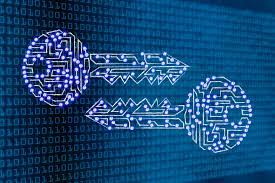

SUMMARY

Cryptography is the science of encrypting and decrypting data.
Based on complex mathematics, cryptography provides several important information security services such as authentication, confidentiality, integrity, and non-repudiation.
Cryptographic protocols and applications make cryptography user-friendly and enable users to secure their data without having to carry out the complex mathematics themselves.
Modern cryptography relies on cryptographic keys, usually a short string of text, for encoding and decoding messages in combination with cryptographic algorithms.
Based on the type of keys used, cryptography is classified as either symmetric or asymmetric key cryptography.
Both symmetric and asymmetric key cryptography provide data confidentiality.
Asymmetric key encryption is sometimes called public key encryption.
Digital signatures, one of the by-products of public key cryptography, enable the verification of authenticity, integrity, and non-repudiation.